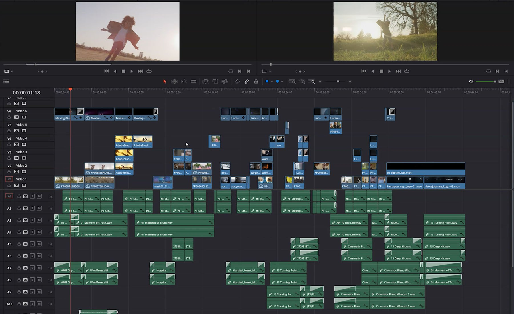
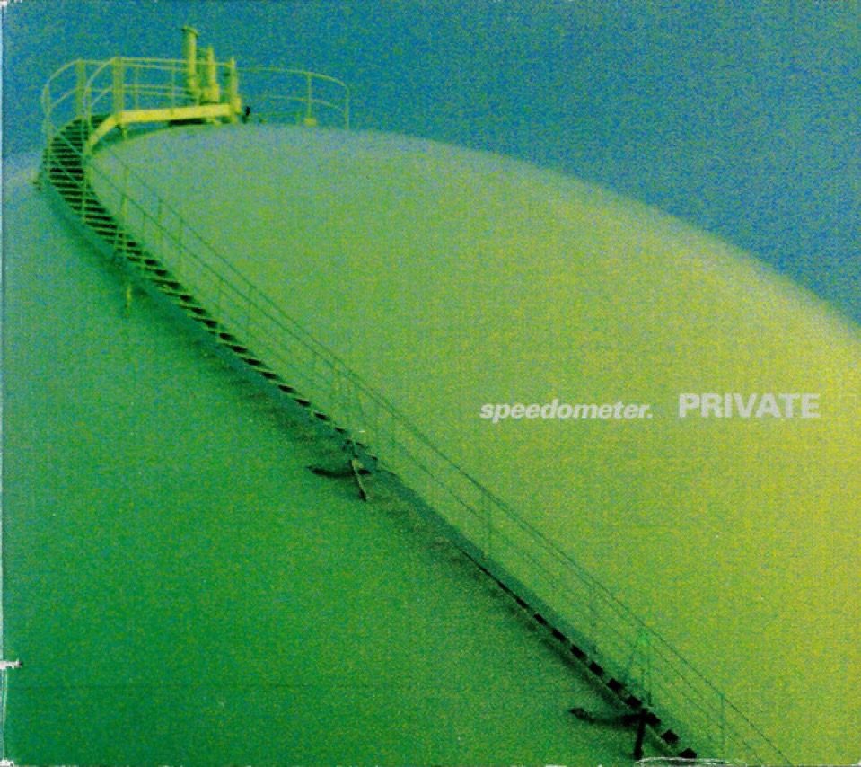

i love to learn. i'm an avid reader, writer, and video essay connoisseur. i also love to make things, be it through photography, writing research papers, or experimenting with video editing.


i also love experimental art and music.
